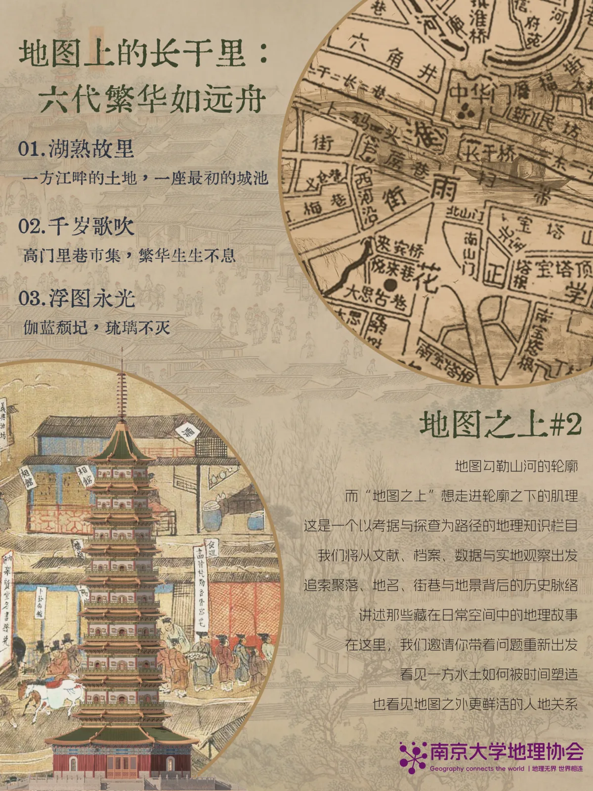
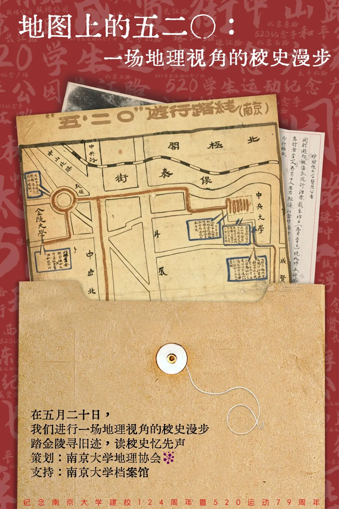
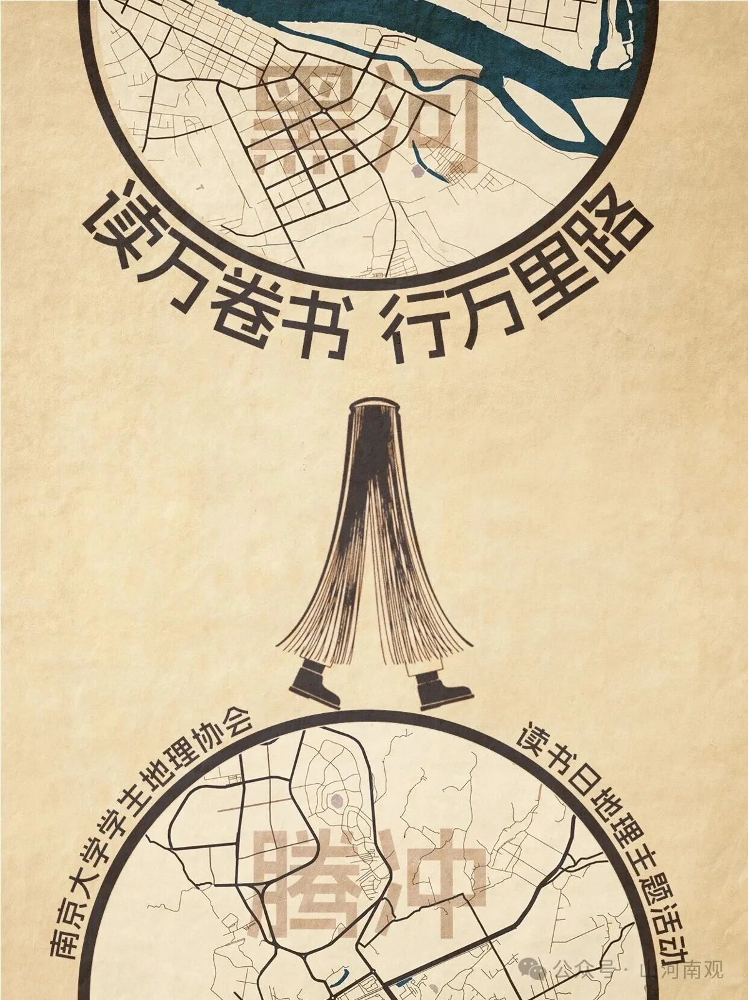
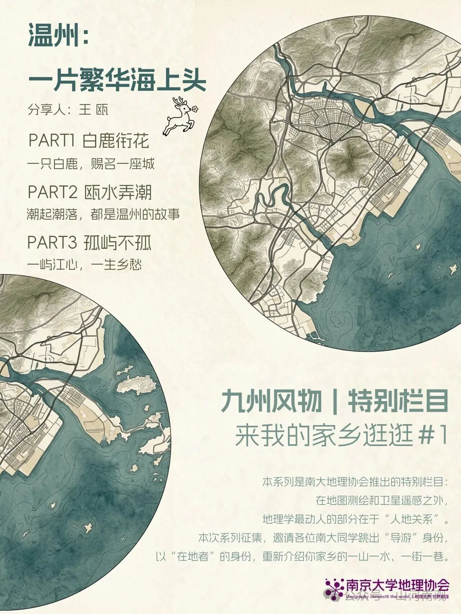

阅读原文（在新标签页打开）
阅读原文（在新标签页打开）地图上的梅山：两地飞归是故乡（在新标签页打开）
6月7日，2026年全国高考拉开帷幕。在南京梅山，一批特殊的考生也将走进考场。
FIELD JOURNAL / 山河手记
收录地协的原创推文、地方观察与阅读分享。每篇文章，都是一次重新认识世界的邀请。
阅读原文（在新标签页打开）6月7日，2026年全国高考拉开帷幕。在南京梅山，一批特殊的考生也将走进考场。

阅读原文（在新标签页打开）这一块台地，有着历代叠压的地层，从商末绵延以至明清，层层上累，从无断代。城市的生命也如土层堆积，由此开始，向上走。

阅读原文（在新标签页打开）对南京大学而言，5月20日始终是一个特殊的日子：1947年5月20日，我们的前辈走出校园，以“反饥饿、反内战、反迫害”为口号，发起了声势浩大的五二〇运动。如果把历史放回城市空间中重新审视：五二〇不仅是一场运动、一段校史，更是一条连接校园与城市、历史与当下的地理线索。
我们面向全校师生发起「我的地理书单」全校征集，以书为媒，汇聚南大人的地理热爱，让每一本好书，都成为照亮山河的微光。

阅读原文（在新标签页打开）恰逢第31个“世界读书日”与首个“全民阅读活动周”，在地理与海洋科学学院团委指导下，南京大学学生地理协会落地 “阅见经纬”共享图书角，并重磅推出“读万卷书，行万里路”全民阅读活动周主题分享会。
这座城市还有很多图层没被打开。而我们，需要更多一起解锁它的人。

阅读原文（在新标签页打开）形散而神不散，才是这片被嶙峋地形、曲折水道所切割的土地的状态。本文从地理视角带你重新认识温州。
没有找到符合条件的文章，请尝试其他关键词。
文章链接将打开微信公众号原文，部分链接可能需要在微信中查看。